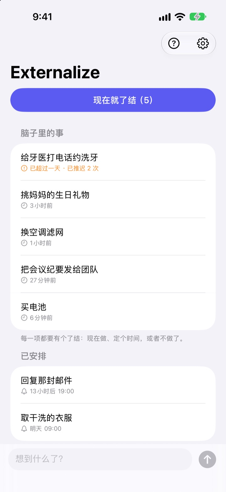
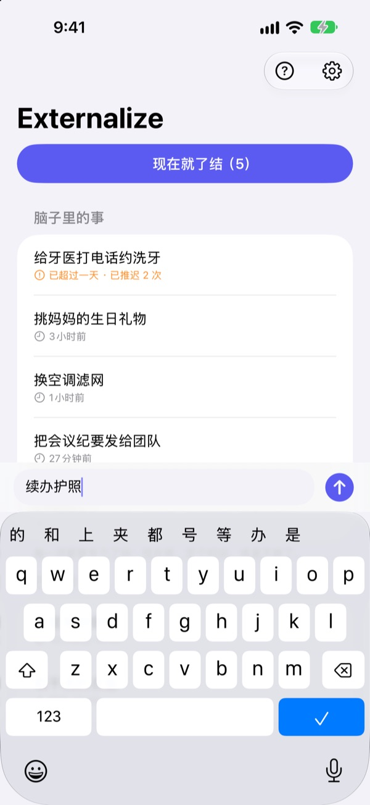
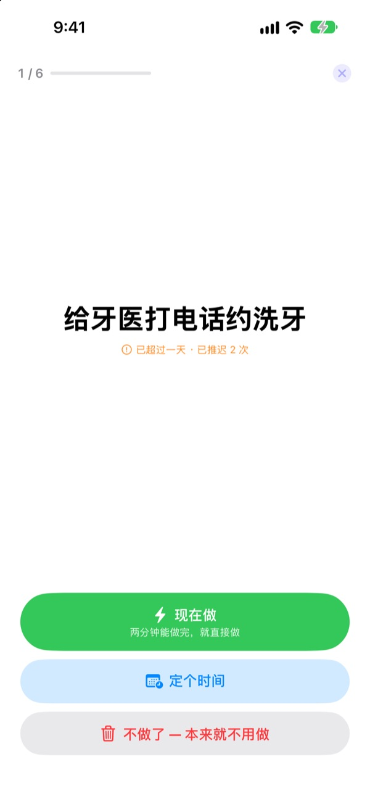
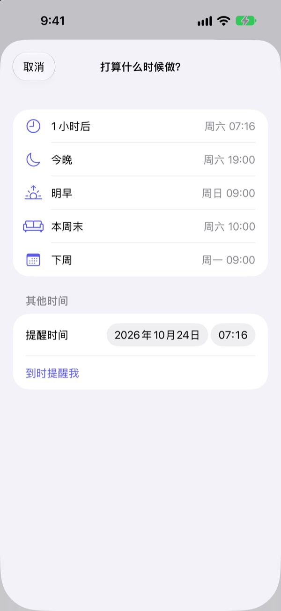

现在就试试
写下脑子里的一件事，或点一下示例。然后点“现在就了结”，逐项给它们一个结果。
再小的事，也会占着脑子
洗澡时、等红灯时、快睡着时，“那件事还没做”突然冒出来。手边没地方记，只好一直惦记着，手上的事也跟着分了心。待办 App 又要先建清单、定截止日期，连记一笔都成了负担。
3 秒记下，然后忘掉
打开 App，直接在屏幕底部的输入栏里写。不用选清单、文件夹，也不用定截止日期。
轻点锁定屏幕小组件就会打开一行空白输入栏。对 Siri 说 在Externalize中记一下，或者设置到操作按钮上，不打开 App 也能记下。

晚上逐项了结
还有没处理的事，晚上 9 点提醒你一次。都处理完了就不打扰。
开始了结后，事项会一条一条放大显示。选“现在做”“定个时间”或“不做了”，就进入下一条。两分钟能做完的事，开个计时器马上搞定。

不会越积越多
定时间时可以选“1 小时后”“今晚”“明早”“本周末”或“下周”，到点再提醒你。在通知里就能直接选“完成”“明早”或“不做了”。
放了一天以上的事和一拖再拖的事都会被标出来，一直往后推的事一眼就能看到。

三步开始
- 1
想到就记
在 App、锁定屏幕小组件或 Siri 里，哪个顺手用哪个，写几个字就行。
- 2
允许通知
第一次记下事项时会问一次，用于晚间提醒和你定好的时间。
- 3
晚上了结
点开提醒或“现在就了结”，给每一项一个结果。
在列表里直接处理
- 轻点事项
- 选择“完成”“定个时间”或“不做了”
- 向右轻扫
- 完成（从列表中移除）
- 向左轻扫
- 不做了，或用“稍后”定个时间
- 现在就了结
- 把剩下的事一条一条过一遍
- 在Externalize中记一下
- 对 Siri 说，不用打开 App
- 设置 ▸ 晚间提醒
- 更改提醒时间或关闭
定时间时，“今晚”是晚上 7 点，“明早”是早上 9 点，“本周末”是周六上午 10 点，“下周”是周一上午 9 点。也可以自己选任意日期和时间。
常见问题
不打开 App 也能记吗？
可以。对 Siri 说 在Externalize中记一下，它会问你要记什么，然后直接保存。在“设置”的操作按钮里指定“记下来”快捷指令，按一下就能记。
怎么添加锁定屏幕小组件？
长按锁定屏幕，轻点“自定”，选择锁定屏幕，轻点小组件区域并添加 Externalize。轻点它会打开一行空白输入栏，还能看到剩下几项。主屏幕上也可以放小尺寸小组件。
想更改或关闭晚间提醒。
轻点右上角的齿轮 ▸ 晚间提醒，可以更改时间或关闭。默认是晚上 9 点，没有剩余事项的日子不会提醒。
收不到通知。
如果 Externalize 的设置里提示通知已关闭，轻点那里的按钮，到 iPhone 设置中打开通知。没有剩余事项的日子本来就不会有晚间提醒。
定了时间的事会怎样回来？
到了你定的时间会收到通知。长按通知可以直接选“完成”“明早”或“不做了”。如果什么都不选，它会回到“脑子里的事”，下次了结时再处理。
标了“完成”或“不做了”的事还能找回吗？
不能。了结的事会从列表中移除，也没有归档。还拿不准的话，先选“定个时间”，别急着扔掉。
换手机后内容会跟着走吗？
不会。内容只保存在这台设备上，不会上传到 iCloud 或服务器。删除 App 时也会一起删除。
支持哪些设备？
运行 iOS 17 或更高版本的 iPhone。
有问题或发现错误，请发邮件到 mizzking75@gmail.com。附上 iPhone 型号和 iOS 版本，我们能更快查明原因。